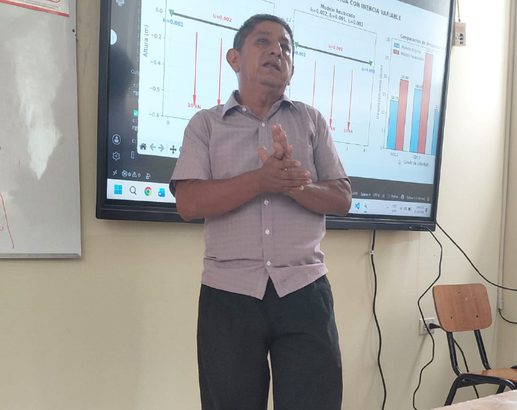
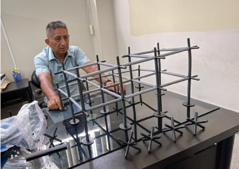
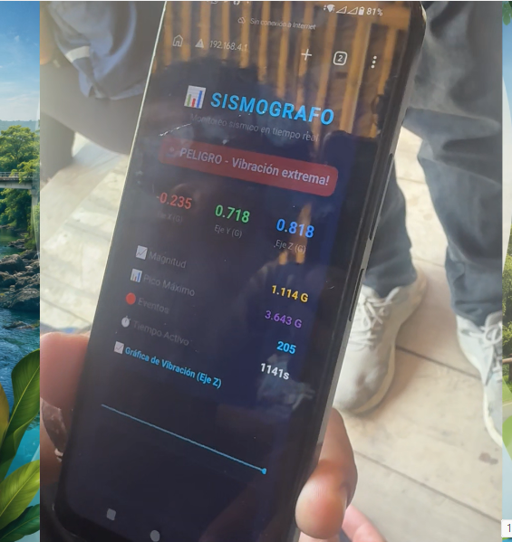
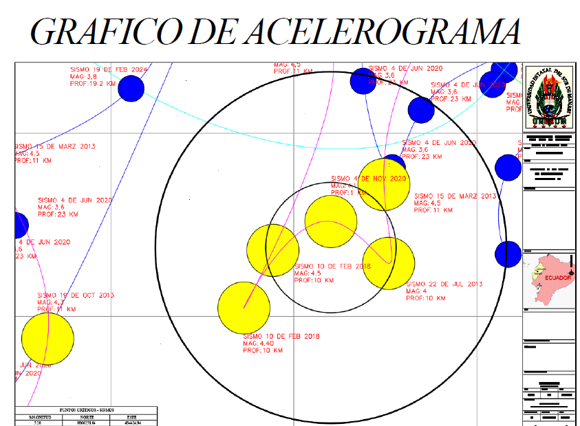

📄 LA HONESTIDAD COMO ESTRUCTURA
Artículo Científico: Modelado Estocástico y Educación en Valores
EL CONOCIMIENTO TRANSFORMA — PROYECTO DE FORMACIÓN MODULAR
ARTÍCULO CIENTÍFICO1. 🔬 LA DOBLE ESTRUCTURA: INGENIERÍA Y ÉTICA
Existe una profunda analogía entre la rigidez estructural que estudia la ingeniería y la honestidad como pilar ético de la sociedad. Ambas son estructuras invisibles que no se ven a simple vista, pero que se revelan cuando el sistema es puesto a prueba.
| Concepto Estructural | Analogía Ética |
|---|---|
| Rigidez (K = 24EI/h³) | La honestidad como capacidad de resistir sin deformarse ante la presión. |
| Equilibrio (∑F = 0, ∑M = 0) | La honestidad como búsqueda del equilibrio entre intereses y valores. |
| Incertidumbre (P(Δ>3cm) = 10%) | La honestidad como aceptación de que no todo es controlable. |
| Patología estructural | La deshonestidad como grieta que, si no se repara, colapsa el sistema. |
2. 📸 EVIDENCIA VISUAL: LA HONESTIDAD EN EL TERRITORIO
Estas imágenes documentan la aplicación del artículo en el territorio de Agua Dulce.

🎤 Exposición en el Aula Rural
El docente explica el modelo estructural a la comunidad en el aula de caña de Agua Dulce.

🏗️ Maqueta del Pórtico
La maqueta de madera permite validar experimentalmente los conceptos de rigidez y vibración.

📱 Sismógrafo con Phyphox
El smartphone se convierte en un laboratorio móvil. La aplicación mide la aceleración en tiempo real.

📊 Acelerograma de Sismos Históricos
El gráfico muestra los sismos registrados en la zona de Jipijapa. Es la evidencia del contexto sísmico real.
3. 🎲 EL MODELADO ESTOCÁSTICO COMO METÁFORA DE LA HONESTIDAD
El modelado estocástico parte de un reconocimiento fundamental: no podemos saber con certeza cuándo ni con qué intensidad ocurrirá el próximo terremoto. Solo podemos estimar probabilidades. Esta misma incertidumbre es la que enfrentamos en la vida moral.
4. 🎬 EL MICROCORTEMETRAJE COMO PLATAFORMA EDUCATIVA
El microcortometraje "La Honestidad" es una herramienta de aprendizaje constructivista que:
- Sitúa el aprendizaje en el territorio (Recinto Agua Dulce, Manabí).
- Involucra a la comunidad en la construcción del muro y el sueño del puente.
- Utiliza la metáfora estructural para explicar conceptos éticos.
- Transforma la incertidumbre en un concepto enseñable.
EL CONOCIMIENTO TRANSFORMA — PROYECTO DE FORMACIÓN MODULAR
Estructura I / Estructura II — Carrera de Ingeniería Civil — UNESUM — PI 2026
Docente responsable: Ing. Gery Lorenzo Marcillo Merino